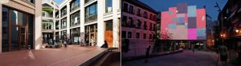
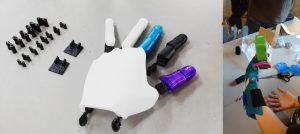
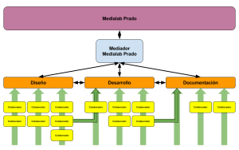
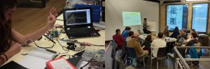
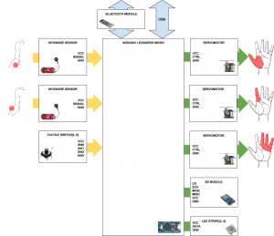

El mérito e impacto de los proyectos Open Source ha sido a menudo exagerado y sobredimensionado. Si bien es cierto que algunos han tenido mucho éxito (Linux, impresión 3D, Arduino); otros tantos han caído en el olvido o han sido utilizados únicamente por sus desarrolladores, sin conseguir introducirse en el mercado o formando parte de un sector muy reducido de formación tecnológica.
Sin embargo durante los últimos años esta tendencia está cambiando y los proyectos Open Source gozan de una popularidad renovada que abre su espectro a nuevos sectores. A través de distintas plataformas de internet los desarrolladores pueden poner en común proyectos y colaborar en la creación y perfeccionamiento de nuevos dispositivos y programas.
Es en este marco donde se encuadra Medialab Prado [1]. Medialab Prado es un espacio del Ayuntamiento de Madrid cuyo objetivo es dotar a toda aquella persona que tenga un proyecto abierto de orientación digital o tecnológica de un espacio de trabajo, unos recursos materiales y la posibilidad de formar un grupo de trabajo a través de una convocatoria abierta (Además el edificio es muy bonito y moderno).

Figura 1: Instalaciones Medialab Prado
En sus 16 años de vida, Medialab Prado ha albergado multitud de proyectos de todo tipo y de diversas disciplinas tales como la impresión 3D, la electrónica de prototipado o el periodismo digital. Actualmente hay una gran variedad de grupos de trabajo abiertos tales como:
- Interactivos? (Usos creativos de la electrónica y la programación)
- Coder Dojo (Cursos de programación para niños)
- Livecoding (Programación de música y luminaria en vivo)
- Danzantes (Generación de sonido a través de sensores y baile)
Cualquier individuo puede unirse a uno de estos grupos de trabajo a colaborar con el objetivo del proyecto de forma voluntaria y con un compromiso acorde a sus posibilidades e intereses. Los grupos de trabajo están formados por colaboradores de un trasfondo profesional amplio tanto de disciplinas técnicas como artísticas .
Esto hace de Medialab un lugar donde distintos grupos desarrollan proyectos creativos de alto valor. Para el individuo, representa una gran oportunidad de poner en común su disciplina en colaboración con otras totalmente dispares.
Exando una Mano: Desarrollando una prótesis myoeléctrica para niños
Mi experiencia personal en el medialab comienza hace ya unos meses, cuando me incorporé al proyecto Exando una Mano [2], cuyo objetivo es desarrollar una prótesis mioeléctrica de una mano para niños que carezcan de ella (ya sea a causa de un accidente o desde el nacimiento). Las prótesis mioeléctricas son prótesis capaces de ser controladas a través de sensores mioeléctricos (que miden la tensión muscular a través del estrés cutáneo) y motores capaces de accionar los distintos mecanismos de la mano, permitiendo un control complejo de la mano y un uso amplio.
Este proyecto fue gestado como respuesta a la situación actual del mercado de este tipo de prótesis, controlada por pocas empresas que establecen precios muy elevados (Alcanzando los 20.000€) que muchos padres no se puede permitir, especialmente considerando que las prótesis para niños tienen una vida útil mucho menor a la de un adulto por el continuo crecimiento.
Estas prótesis son buenos productos, duraderos y certificados que ofrecen mucha fiabilidad a los usuarios. Sin embargo, su funcionalidad es baja; su versatilidad nula y su tecnología parece estancada hace décadas. En la actualidad existen varios proyecto Open Source que han desarrollado prótesis mioeléctrica para adultos de muy buena calidad, destacando Openbionics [3] y Bionicohand [4].

Figura 2: Modelado 3D Prototipo y Modelo No Mioeléctrico en Uso
Equipos Multidisciplinares
Yo me uní al proyecto una vez este había comenzado y encontré a un grupo grande de colaboradores que se reunían una vez a la semana para plantear el proyecto en la primera fase de desarrollo. Los grupos de Medialab están organizados a través de un Mediador, que es un trabajador de Medialab que se encarga de la organización básica del proyecto, actúa de portavoz y gestiona la adquisición de recursos del proyecto a través de Medialab.

Figura 3: Modelo de Organización Grupo de Trabajo
El grupo está formado por miembros de un amplio espectro de edad. Incluye muchos estudia ntes, pero también adultos y jóvenes profesionales. Los trasfondos profesionales o académicos de los miembros cubre casi todas las necesidades del proyecto:
⦁ Expertos en diseño y prototipado 3D
⦁ Ingenieros electrónicos (Industriales y de Telecomunicaciones)
⦁ Ingenieros Informáticos
⦁ Ciencias de la salud (Fisioterapeutas)
⦁ Abogados
Uno de los elementos más importantes del proyecto es la participación activa de padres de niños con la necesidad de estas prótesis. Estos guían al grupo en la definición de los objetivos y la verificación de las necesidades. Han participado también algunos de los niños prestandose a que sus brazos fuesen escaneados por 3D con el fin de modelar acorde.

Figura 4: Equipo de Desarrollo y Reunión General
Estado actual del proyecto y lineas futuras
Actualmente el estado del proyecto algo por debajo del Timeline propuesto. Se han probado un buen número de motores Servo y sensores (Sensores flexisensor, sensores presión) y distintas configuraciones electrónicas. Actualmente se ha optado por usar los sensores MyoWare [5] para la lectura de las señales musculares y los Servomotores HS-35HD [6] para el movimiento de los dedos.
En el plano del diseño 3D, se han probado varios materiales de distintas propiedades como el ABS y PLA (Muy comunes) u otros más concretos y de naturaleza flexible. Finalmente se ha optado por un material que ofrece flexibilidad para articulaciones pero sin perder robustez.
Concretados estos términos, se trabaja ya en el primer prototipo, que espero pronto podamos mostraros funcionando.

Figura 5: Diagrama Bloques de Desarrollo Electrónico de Prototipo
Las líneas de trabajo actuales, además, tienen como objetivo hacer alguna clase de videojuego para el entrenamiento del control así como documentar y digitalizar bien todo el proceso. Sabed que toda colaboración voluntaria y comprometida es muy valiosa para el proyecto y que aunque esté en un proceso más o menos avanzado, siempre es de gran ayuda.
Solo espero que en proyectos futuros, más ingenieros de la ETSIST decidan donar parte de su potencial (que es amplio y valorado) a algunos de los interesantes proyectos que van surgiendo en Medialab para hacer de esta ciudad un lugar mejor.
Referencias:
[1] Qué es, Mediala Prado Webpage (nd), http://medialab-prado.es/article/que_es [2] Exando una Mano Main Page, Exando una Mano (nd), http://exandounamano.com/ [3] Openbionics Main Page, Openbionics (nd), http://www.openbionics.org/ [4] BionicoHand: a bionic open hardware hand, Wave+ (nd), http://www.wave-innovation.com/en/bionicohand.html [5] MyoWare Muscle Sensor Product Information, Pololu (nd), https://www.pololu.com/product/2732 [6] Servomotor HC-35HD Product Information, Sparkfun (nd), https://www.sparkfun.com/products/11882